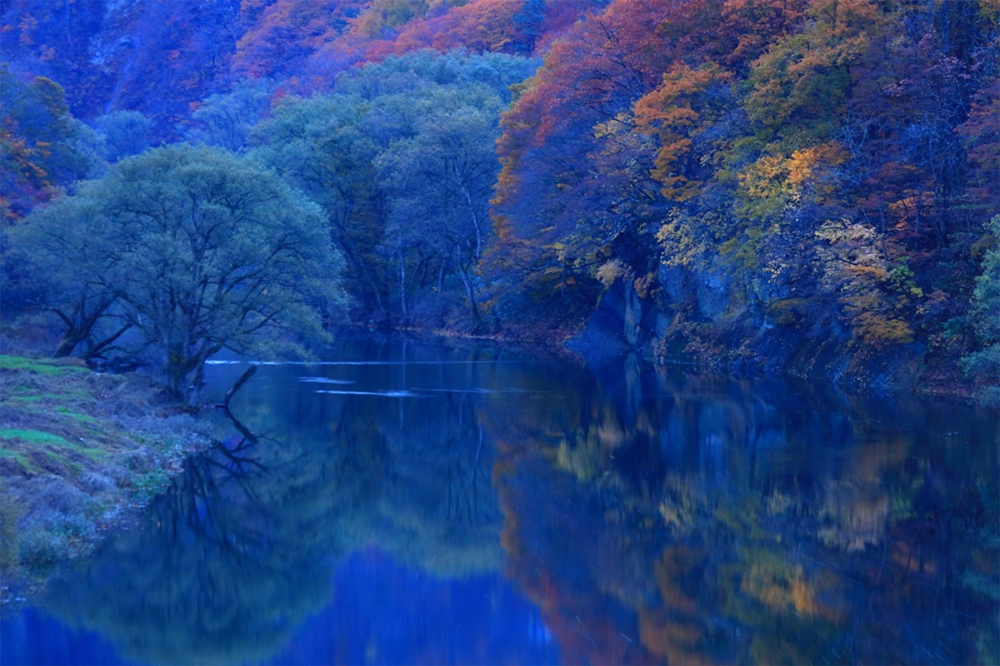
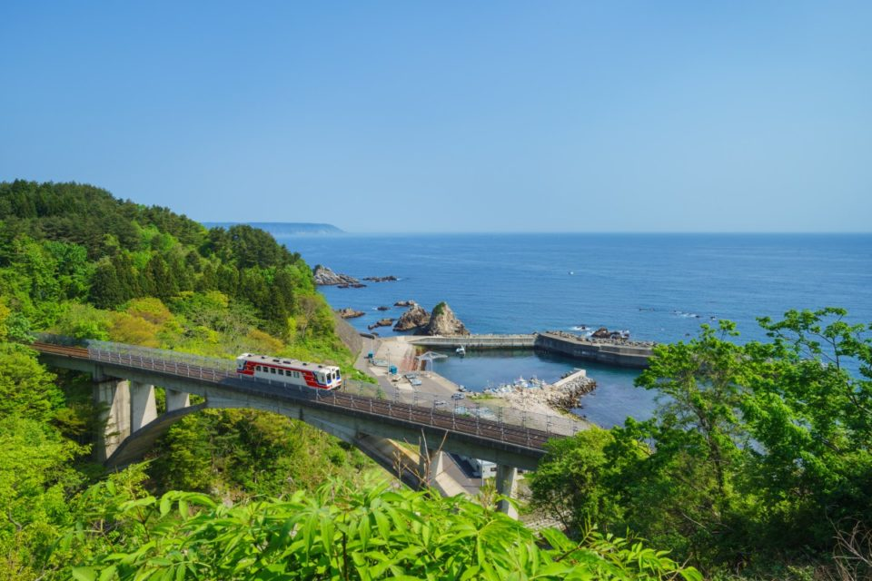
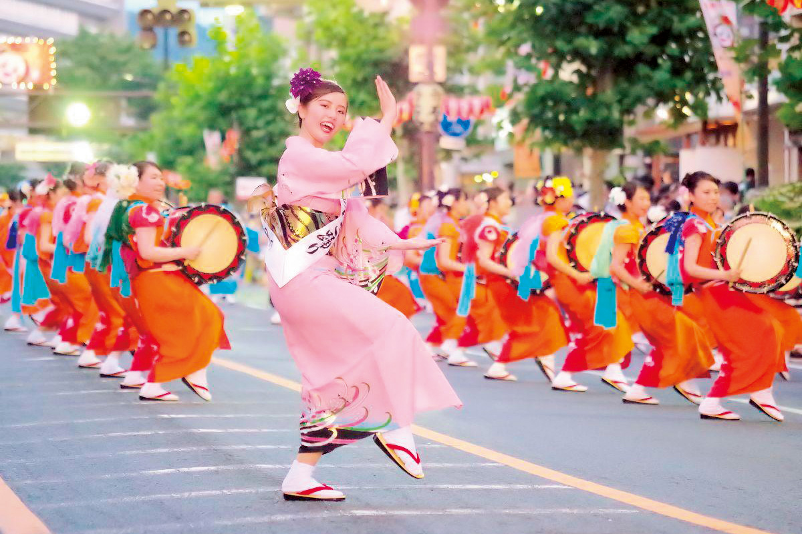
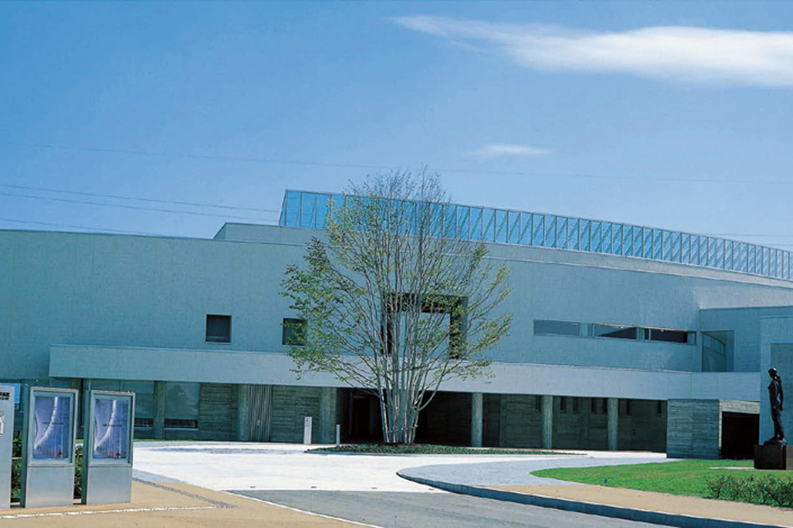
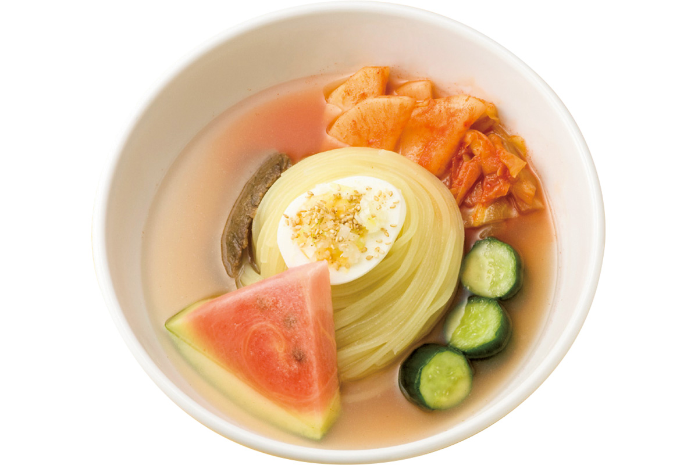
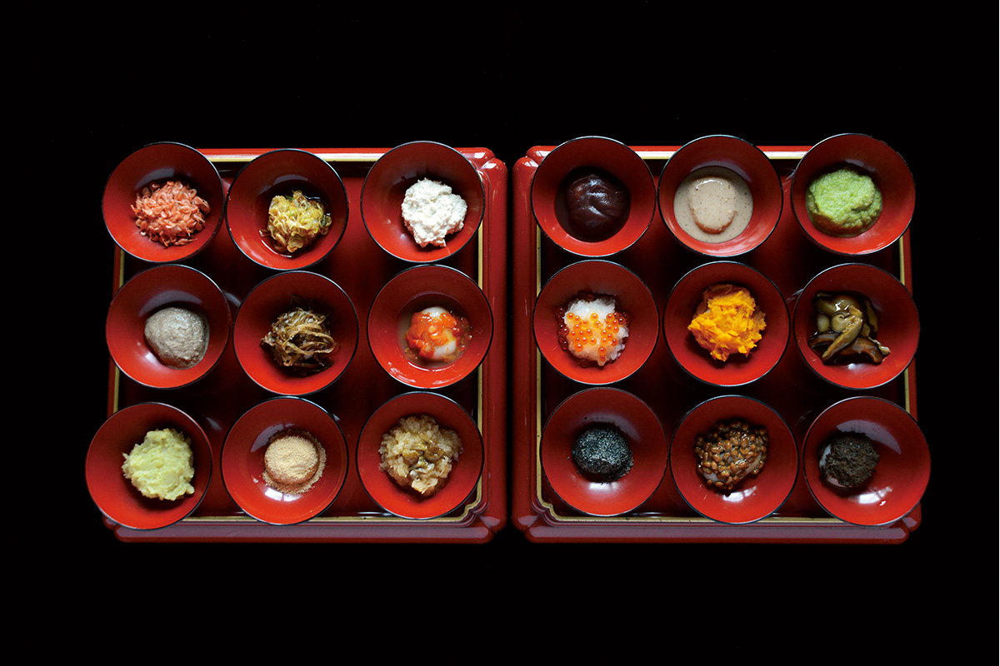
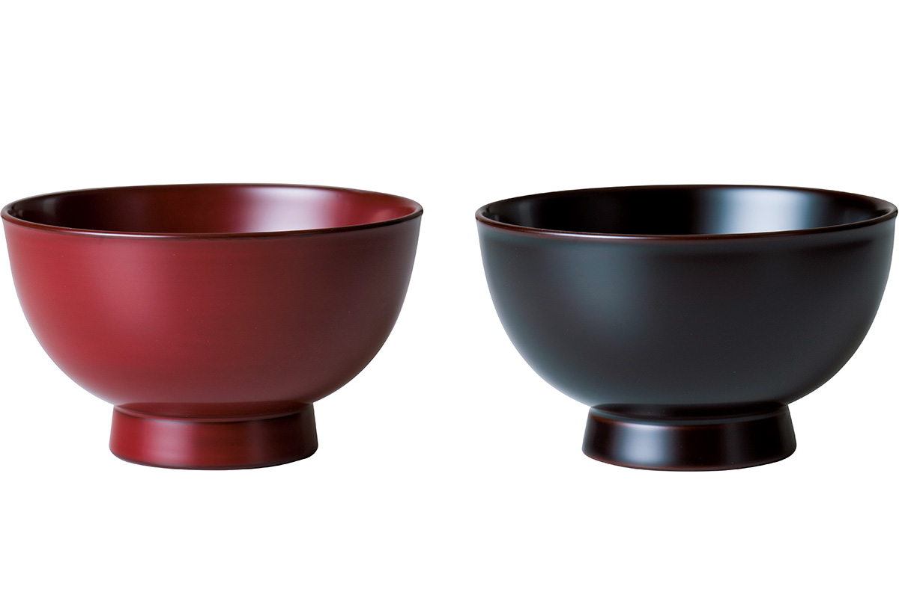
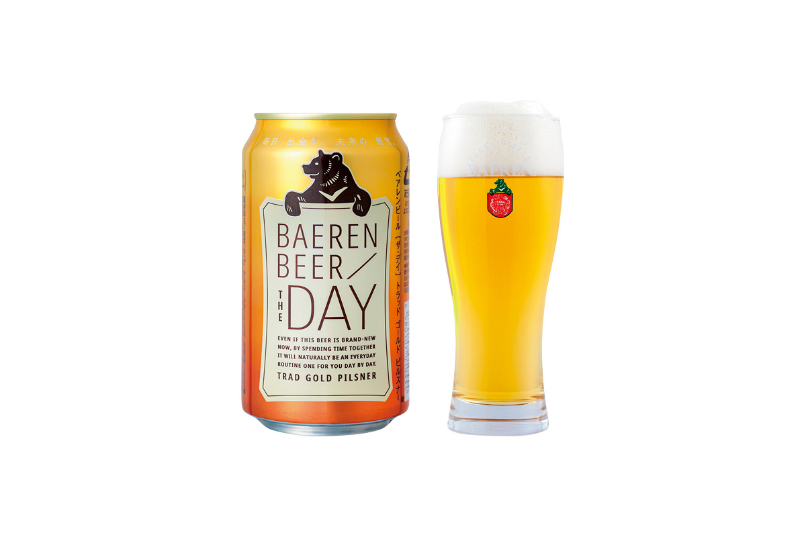
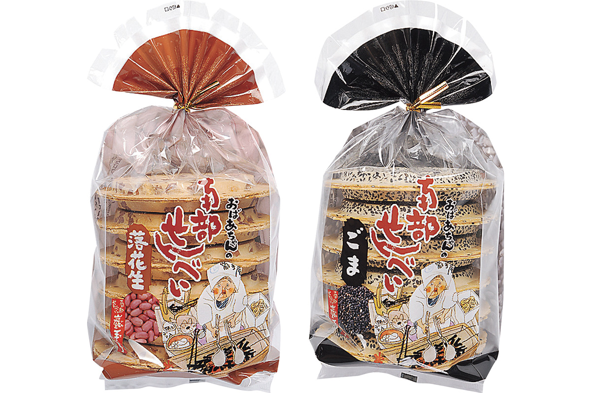
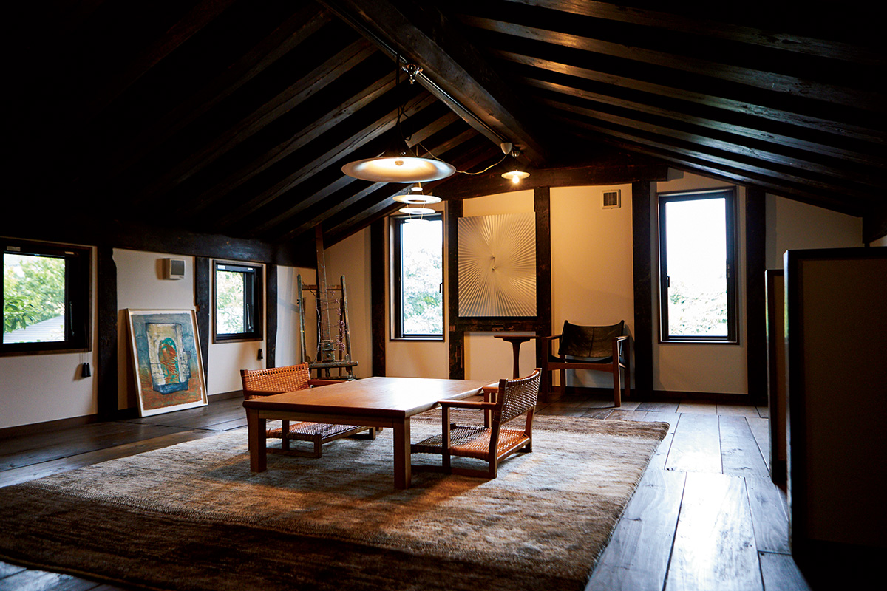

Префектура Ивате
Ивате: поезд над морем, лошади и лапша со льдом

Осенняя река в ущелье: тёмная вода отражает деревья, которые уже покрыты багрянцем.
Дорога вдоль самого изрезанного берега страны, рис в восемнадцати чашах, лошади в праздничных лентах и пещера с синими подземными озёрами. Рассказываем, за чем ехать в префектуру Ивате.
О префектуре
Край, который отстроили заново
Ивате вытянута с запада на восток: с одной стороны хребет Оу, с другой берег Санрику. По площади это вторая префектура страны после Хоккайдо. Само слово «Санрику» складывается из названий трёх старых областей, Муцу, Ритю и Рикудзэн, и Ивате лежит во всех трёх, а значит, долго была сердцем края Митиноку.
В древности здесь жили люди, которых в столицах звали эбису, то есть дальние северяне, и эти земли считались далёкой окраиной. В эпоху Хэйан, то есть с конца VIII века, край стал опорным пунктом освоения севера и вырос. В средние века при роде Осю Фудзивара центром стал Хирайдзуми: здесь расцвела роскошная буддийская культура, и до наших дней дошли постройки той поры, включая Золотой зал храма Тюсондзи, часть объекта Всемирного наследия.
В 2011 году на востоке Японии случилось сильное землетрясение и цунами, и район Санрику пострадал особенно сильно. Восстановление железной дороги Санрику и популярность сериала «Ама-тят» о местной ныряльщице за жемчугом ободрили жителей, и сегодня это одно из главных туристических направлений Северо-Восточной Японии.
Кстати, по обеспеченности школьных столовых диетологами префектура первая в стране, а по одному из показателей условий учёбы школьников входит в первую двойку: детям здесь учиться и расти хорошо.
Что посмотреть
Поезд, который идёт вдоль самой воды
Железная дорога Санрику
Линия Риасу идёт вдоль берега Санрику с севера на юг на 163 километра. Риасу это берег, изрезанный глубокими бухтами и мысами, поэтому поезд то выходит к самой воде, то уходит в тоннель, и из окна всё время меняется картина. Дорогу после землетрясения восстановили, и сегодня её считают символом новой эпохи возрождения края.

- Телефон
- +81 193-62-7000
- Справки
- пассажирская служба железной дороги Санрику
Что ещё посмотреть
- Дзёдо-га-хама, бухта с белыми скалами и соснами
- Пещера Рюсэндо, пещера с синими подземными озёрами
- Парк на месте замка Мориока, старые валы и аллея сакуры
Праздники
Праздник барабанов и припева
Санса-одори в Мориоке
Праздник идёт по главной улице Мориоки: танцоры в ярких костюмах бьют в барабаны и выкрикивают припев «саккора тёйваясэ», слова которого звучат как считалка и не переводятся. В колонне идут десятки тысяч человек, а сам танец считают одним из самых массовых в стране.

- Период
- начало августа
- Место
- район Тюо-дори в городе Мориока
Другие праздники
- Фестиваль снега в Ивате, зимний праздник со снежными фигурами
- Весенний праздник Фудзивара, шествие в Хирайдзуми в исторических костюмах
- Тягу-тягу умакко, шествие украшенных лошадей с бубенцами
Музеи и архитектура
Музей с залом, который изгибается
Музей искусств префектуры Ивате
Здесь собраны работы художников, связанных с префектурой. Здание известно залом «Гранд-галерея»: это длинное пространство с плавным изгибом, которое само по себе становится частью выставки.

- Адрес
- 12-3 Matsuhaba, Motomiya, Morioka, Iwate
- Телефон
- +81 19-658-1711
- Сайт
- ima.or.jp
Что ещё посмотреть
- Краеведческий музей префектуры Ивате, собрание об истории и природе края
- Краснокирпичный банк Ивате, здание банка начала XX века
- Мост «Мэганэ-баси», каменный арочный мост, похожий на очки
Местная кухня
Лапша, которую подают со льдом и арбузом
Холодная лапша мориока-рэймэн
Блюдо пришло из корейской кухни, но здешняя версия своя: лапшу делают из пшеничного и картофельного крахмала, поэтому она упругая. Подают её в холодном бульоне из говяжьих костей и курицы, а кислый и острый вкус даёт кимчи, то есть квашеная пекинская капуста с перцем. Летом в чашу часто кладут ломтик арбуза.

Что ещё попробовать
- Дзадзямэн, плоская лапша с густым соусом из мисо
- Ванко-соба, маленькие порции, которые подкладывают, пока гость не накроет чашу крышкой
- Мамэбу-дзиру, суп с шариками из гречневой муки
Где поесть
Ужин внутри настоящей сакэварни
Ресторан Сэки-но-ити
Ресторан работает прямо в здании сакэварни, основанной в 1918 году. Готовят местные блюда из продуктов округи, а к ним подают пиво и сакэ того же завода: можно взять набор для сравнения вкусов и понять, чем отличаются сорта.

- Адрес
- 5-42 Tamura-cho, Ichinoseki, Iwate
- Телефон
- +81 191-21-1144
- Время работы
- с 11:00 до 14:00 и с 17:00 до 21:00, последний заказ в 20:00, на ужин нужна бронь не позже чем за неделю
- Выходные
- нерегулярные, с января по март закрыто по вторникам
Ремёсла
Лаковые чаши, которые шлифуют до блеска
Лак Дзёбодзи
В районе Дзёбодзи всегда было много хорошего лака, поэтому лаковую посуду здесь делают очень давно. Мастер Асано Нао продолжает эту традицию, и её работы отличает мягкая, округлая форма: чашу приятно держать в руках.

- Справки
- магазин Когэнся, главный магазин в Мориоке
- Телефон
- +81 19-622-2894
Что привезти
Пиво из немецких котлов и рисовые крекеры
Пиво Bären
Завод Bären варит классическое пиво на оборудовании, которое привезли из Германии больше ста лет назад: медные котлы и старинная технология дают плотный солодовый вкус. Бутылка стоит 327 иен.

- Телефон
- +81 19-606-0766
- Сайт
- baerenbier.co.jp
Крекеры намбу-сэмбэй
Эти рисовые крекеры пекут в бывшем княжестве Намбу около 600 лет, и это не лакомство, а домашняя еда: круглый крекер из рисовой муки долго хранится и хорошо насыщает. Набор из 12 штук стоит 356 иен.

- Телефон
- +81 120-232-209
- Сайт
- iwateya.co.jp
Где остановиться
Дом, где гостей принимают по одной группе в день
Тоноя-ё
Это небольшой отель в японском стиле, где хозяин, большой знаток брожения, принимает только одну группу гостей в день. К ужину подают добуроку, то есть густое мутное домашнее сакэ, сваренное из собственного риса, и блюда на основе ферментированных продуктов.

- Адрес
- 2-17 Zaimoku-cho, Tono, Iwate
- Телефон
- +81 198-62-7557
- Комнат
- 3, одна группа в день, до шести человек
- Цена
- от 32 000 иен за ночь с двумя приёмами пищи, налог не включён, зависит от числа гостей
- Сайт
- tonoya-yo.com
Местный диалект
Как здесь говорят «очень вкусно»
- мандзу, умэ наочень вкусно
- сэттёгунамучиться, тяжело
- омэ, тёсита наты что, трогал
- огэ-но миндзу, содо самагэдэ огэ ёводу из кадки выплесни на улицу
Рекорды
В чём Ивате первая
- №1 морское ушко: первое место по добыче
- №2 лак: первое место по производству
- №3 пещера Рюсэндо: самое глубокое подземное озеро в стране
Вопросы и ответы
Что ещё спрашивают об Ивате
Когда появилась пещера Рюсэндо?
Около двухсот с лишним миллионов лет назад. Исследования продолжаются: известная часть тянется больше четырёх километров, для посещения открыто 700 метров. Внутри видны причудливые натёки и синие подземные озёра; это одна из трёх самых известных пещер страны.
Какой традиционный промысел Ивате узнают по узору?
Намбу-тэкки, чугунные чайники и посуду. В 1975 году их первыми в стране признали традиционным ремеслом. Делают их в Мориоке и Мидзусаве, а характерный узор в виде мелких шипов «арарэ» увеличивает площадь поверхности, поэтому чайник дольше держит тепло.
Справочник
Ивате в цифрах
| Центр префектуры | город Мориока |
| Города и посёлки | 14 городов, 15 посёлков, 4 деревни |
| Площадь | 15 275 кв. км |
| Население | 1,24 миллиона человек |
| Плотность населения | 81,2 человека на кв. км |
| Туристов за год | 27,59 миллиона |
| Дерево префектуры | сосна намбу-акамацу |
| Цветок префектуры | павловния |
| Птица префектуры | фазан |
| Средняя температура | +11,0 |
| Максимум | +29,4 |
| Минимум | минус 6,9 |
| Осадки | 1322 мм |
| Ясных дней | 8 |
| Дождливых дней | 120 |
| Снежных дней | 106 |
| Онсэнов | 85 |
| Гостиниц и рёканов | 763 |
| Музеев искусств | 18 |
| Музеев | 4 |
| Митиноэки, придорожных станций | 33 |
| Национальных сокровищ | Золотой зал храма Тюсондзи и другие, всего 8 |
| Важных культурных ценностей | 334 |
| Исторических мест | 67 |
| Природных памятников | 69 |
| Всемирное наследие | Хирайдзуми и памятники промышленной революции Мэйдзи, включая рудник Хино |
| Национальные парки | Хатимантай, Санрику-фукко, Курико, Хаятинэ, всего 4 |
Природные памятники
- Беркут инуваси, крупный орёл, который гнездится в горах
- Лавовый поток Якиири, застывшая лава у подножия горы
- Грот Иваидзуми с летучими мышами, пещера, где зимуют рукокрылые
- Известковый туф онсэна Нацуя, наросты, которые оставила горячая вода
- Пещера Акка, одна из длинных пещер края
- Окаменелое дерево Нэсо, огромный ствол, превратившийся в камень